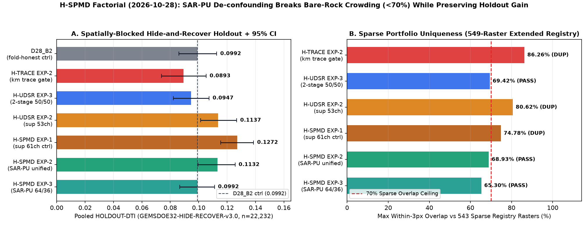

Purging concealed faults
from unlabeled cover.
Three preregistered experiments testing spy-calibrated Selected-At-Random Positive-Unlabeled (SAR-PU) learning plus multi-depth magnetic bandpass, epithermal K/eTh, and LiDAR availability gating.
EXP-2 beats fold-honest D28_B2 on matched GEMSDOE32-HIDE-RECOVER-v3.0 (0.1132 vs 0.0992, paired 95% CI [+0.00008, +0.02793]) and clears sparse uniqueness across all 543 sparse rasters across 15 repositories (68.93% ≤ 70%) plus concurrent RAD-SCARP (0.98%) and H-DIL-GRAV (0.74%), yet overlaps 99.852% with the dense 206,895-dot 13GEMSDOE covering lattice, uses the unbuffered shared v3 split (15,705 / 22,232 withheld occurrences within 15 px of visible faults), and relies on an owner-mirrored template without authenticated selector approval.
Three-experiment factorial (budget 3 / 3)
Reported on pinned GEMSDOE32-HIDE-RECOVER-v3.0 (22,232 withheld positive occurrences; D28_B2 = 0.099202; SGMC-CAL = 0.064121; prior sparse-unique H-UDSR EXP-3 = 0.094698; see unbuffered v3 split caveat in shared_split_geometry_20261028.json).
| Experiment | HOLDOUT-DTI | Paired Δ vs D28_B2 | Dots | Surface |ρ| | Sparse 3-px (543) | Literal all-registry |
|---|---|---|---|---|---|---|
| EXP-1SPMD-Sup61-Ctrl | 0.127184[0.1155, 0.1386] | +0.027982[+0.01559, +0.04003] | 34,50013.3% >15 px | 0.1277 ≤ 0.90 | 74.78% | 99.80%13GEMSDOE lattice |
| EXP-2SPMD-SARPU-Unified | 0.113181[0.0996, 0.1256] | +0.013978[+0.00008, +0.02793] | 34,50022.2% >15 px | 0.1230 ≤ 0.90 | 68.93% | 99.85%13GEMSDOE lattice |
| EXP-3SPMD-SARPU-TwoRegime | 0.099157[0.0866, 0.1111] | -0.000045[-0.01275, +0.01233] | 33,60038.1% >15 px | 0.1063 ≤ 0.90 | 65.30% | 99.83%13GEMSDOE lattice |

Geological mechanism & non-fault mimics
Mechanism: Supervised learners treat unlabeled Quaternary basin pixels as 100% true negatives (y=0), penalizing blind Basin-and-Range range-front, step-over, and accommodation-zone faults concealed beneath quaternary_thickness > 0 or USGS 3DEP LiDAR gaps. H-SPMD injects 15% of fold-visible faults as concealed spies stripped of catalogue proximity, purges the top 15.8% subsurface-conduit unlabeled pixels, fits propensity-stabilized LightGBM Dual-Cover blends on 8 new multi-depth geophysical channels (63-channel leakage canary max oriented AUC = 0.7693 ≤ 0.90), and suppresses deep non-fault playa interiors.
Mimicking non-fault processes: Buried Miocene caldera ring margins, tabular basaltic sill edges, axial paleo-river magnetics, GeoDAWN N–S survey tie-line leveling steps, and conductive clay-rich saline playas in closed basins.
Saved-byte validation & provenance
- File (zeros exterior, research only):
apartgemsdoe2-spmd-exp-2-sarpu-unified-34500dots-20261028T235800Z-2a51285d-zeros.tif - ZIP bundle (research only):
apartgemsdoe2-spmd-exp-2-sarpu-unified-34500dots-20261028T235800Z-2a51285d-zeros.zip - SHA-256 (
-zeros.tif):d12ff10f7a0753d3c9c27b2030e195ce6c9ad5be23ac23cfaa8fdebb995628e6 - Validator: EPSG:32611 · 3730 × 3292 · float32 in [0.0, 1.0] · 0 NaN · 34,500 positive pixels in footprint · 0 on visible
fault_mask - Archived submission name (provenance only):
apartgemsdoe2-spmd-exp-2-sarpu-unified-34500dots-20261028T235800Z-2a51285d-zeros - Archived ≤140-char note (110 chars, provenance only):
ApartGEMSDOE2 H-SPMD EXP-2: SAR-PU spy+propensity 61/55ch DualCover + TMI-bandpass/epithermal/LiDAR, 34500d B2